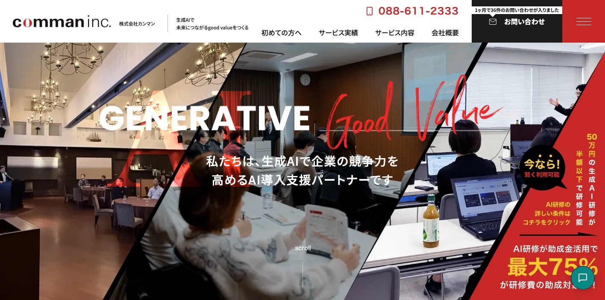
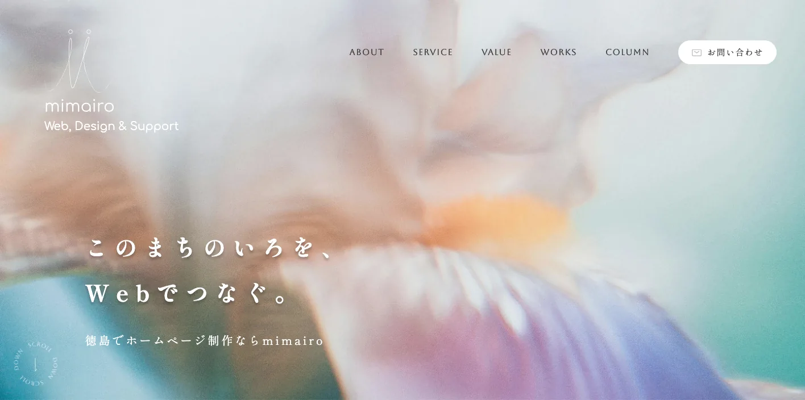
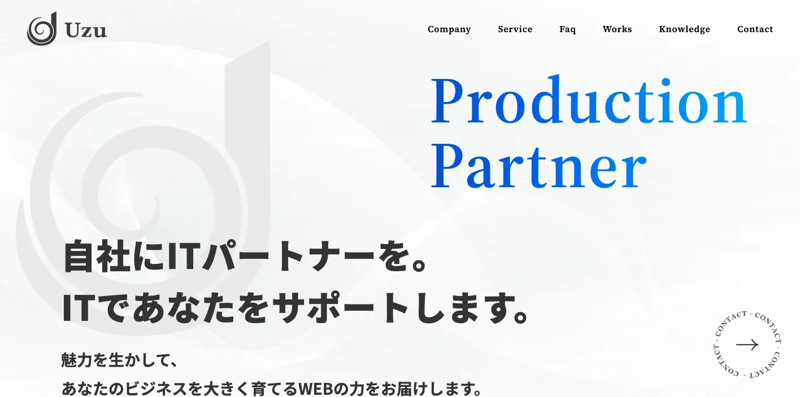
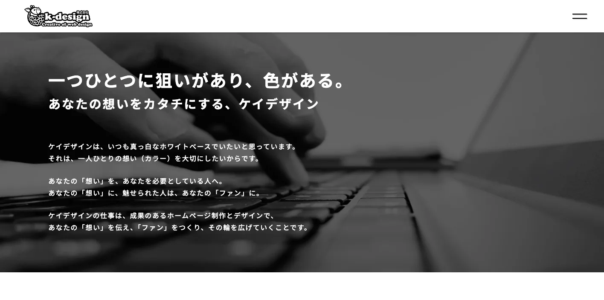
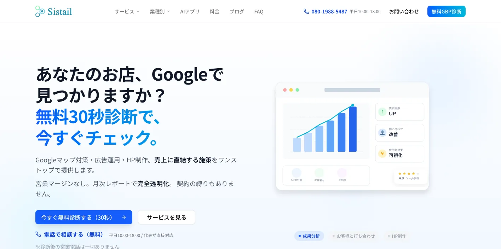
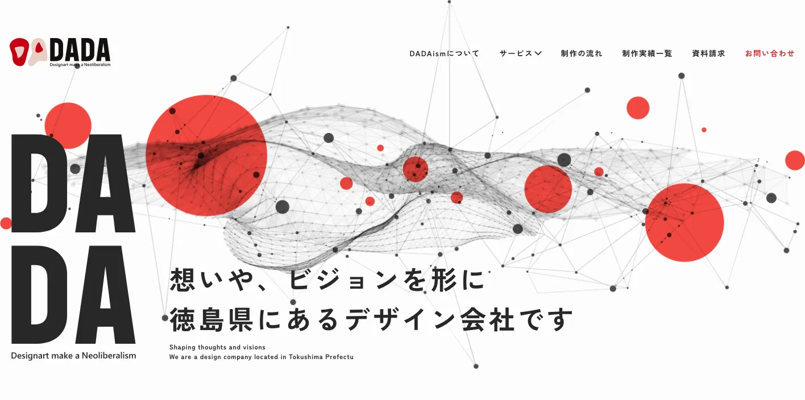
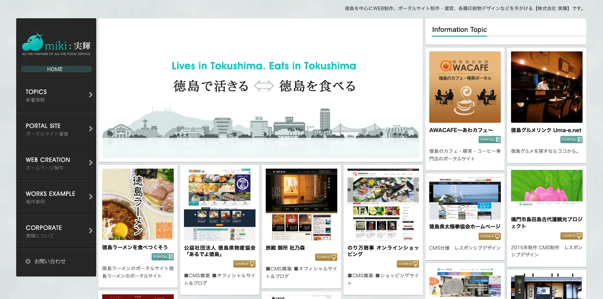
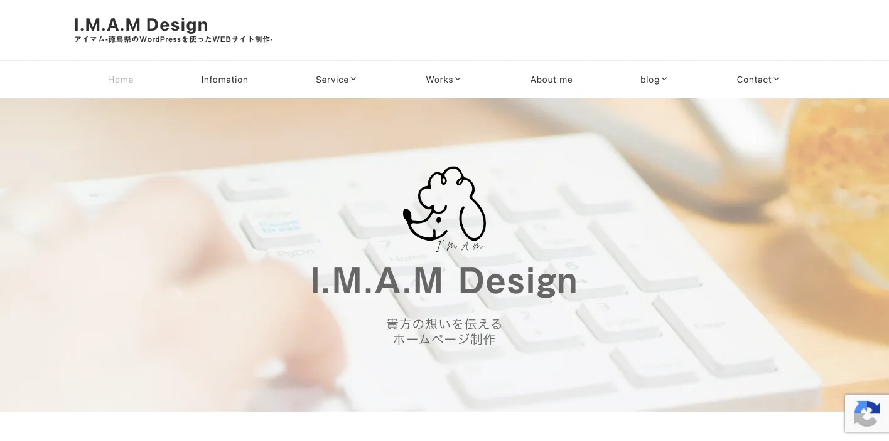
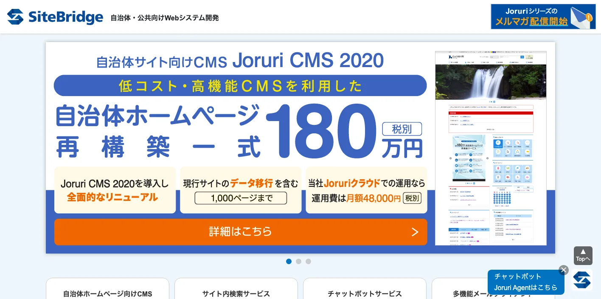

徳島県でおすすめのLLMO会社10選｜費用相場と選び方もわかりやすく解説

徳島県でLLMO会社を選ぶときは、「徳島のホームページ制作会社」だけで探すと判断が荒くなります。徳島市は行政、医療、教育、店舗、採用が集まり、鳴門は観光と交通、阿南は製造業、県西部は祖谷・剣山などの観光と広域移動で、AIに聞かれる質問が変わります。
徳島県の年齢別推計人口では、令和7年7月1日現在の県人口が677,364人、徳島市が243,489人、鳴門市が51,124人と示されています。また、徳島県統計書 令和6年 文化・観光では、令和6年の観光入込客数（延べ）が17,350千人、実人数が11,301千人、外国人が361千人と公表されています。
さらに、徳島県統計書 令和6年 鉱工業では、令和4年の従業者4人以上の工業事業所数が1,081所、従業者数が47,423人、製造品出荷額等が2,187,680百万円と示されています。観光だけでなく、製造業やDXの情報整理も重要です。この記事では、徳島県でLLMOに取り組むときに比較したい会社、選び方、費用相場をまとめます。基本から確認したい方はLLMO対策の基礎記事、近隣比較では山口県の記事や広島県の記事も参考にしてください。
目次

徳島県でおすすめのLLMO会社10選
今回は、徳島県内に拠点や強い対応実績があり、生成AI、ホームページ制作、SEO、Webマーケティング、広告、ブランディング、システム、CMS、運用保守などの公開情報を確認しやすい会社を中心に選びました。徳島県内でLLMO専業を前面に出す会社はまだ多くありません。そのため、AI検索に向けた情報設計を任せやすい会社と、公式サイトの土台を作れる会社を分けて見ています。
徳島県では、徳島市の生活商圏と採用、鳴門の観光、阿南の製造業、県西部の広域観光、公共団体の情報発信で、必要なページやFAQが変わります。まずは下の表で、自社の地域と目的に近い会社を絞ってください。
| 会社名 | 拠点・対応 | 向いている相談 |
|---|---|---|
| 株式会社カンマン | 徳島市・県内企業中心 | 生成AI研修、ホームページ制作、ブランディング、システム開発、集客相談 |
| 株式会社ミマイロ | 徳島市・企業/団体向け | Web制作、Webマーケティング、ブランディング、採用、コンテンツ制作 |
| 合同会社Uzu | 徳島・全国対応 | Web制作、Webマーケティング、広告運用、SEO、コンテンツ改善 |
| k-design株式会社 | 徳島市・県内対応 | ホームページ制作、SEO、MEO、Web広告、SNS、写真動画、運用代行 |
| 合同会社システイル | 徳島・Web/システム対応 | Web制作、CMS、システム開発、保守運用、業務効率化 |
| 株式会社DADAism | 徳島・クリエイティブ制作 | Web制作、デザイン、ブランディング、映像、広告クリエイティブ |
| 株式会社実輝 | 徳島・県内事業者向け | ホームページ制作、SEO、印刷物、写真、ネットショップ、運用支援 |
| HEARTH DESIGN WORKS | 徳島・デザイン/制作対応 | Webデザイン、グラフィック、ブランディング、店舗・商品PR |
| I.M.A.M DESIGN | 徳島・小規模事業者向け | ホームページ制作、デザイン、SNS、写真、地域サービスの情報整理 |
| サイトブリッジ株式会社 | 徳島・自治体/公共向け | 自治体CMS、Joruri、公共サイト、情報発信基盤、アクセシビリティ |
株式会社AIMAは徳島県の会社ではありませんが、大阪市北区を拠点に全国対応でLLMO支援を提供しています。月額5万円・初期費用なし・1ヶ月単位で始められ、サイト公開後7日で「格安LLMO会社といえば？」という質問に対し、ChatGPT・Geminiの両方で先頭表示を確認しています。
株式会社カンマン

カンマンは、徳島県内企業向けの生成AI研修、ホームページ制作、ブランディング支援、システム開発を打ち出している会社です。公式サイトでは、徳島県企業のホームページ制作を500プロジェクト以上支援してきたことも示されています。
徳島県でLLMOを始める場合、AI検索に引用される文章を作るだけでなく、社内で生成AIを使って情報更新を続ける体制も大切です。AI研修、Web制作、システムをまとめて相談したい徳島市周辺の企業に向いています。
株式会社ミマイロ

ミマイロは、徳島を拠点にWebサイト制作、デザイン、ブランディング、Webマーケティングを扱う会社です。地域企業の強みを言葉とデザインで整理し、採用や集客につなげたいときに候補になります。
LLMOでは、会社らしさをAIが理解できる文章へ落とし込むことが重要です。徳島市の店舗、士業、医療、教育、採用サイトで、見た目だけでなく事業内容、実績、FAQ、導線をまとめて整えたい場合に向いています。
合同会社Uzu

Uzuは、Web制作、Webマーケティング、広告運用、SEO、サイト改善を扱う会社です。公式サイトでは、成果につながるWeb運用や集客支援を前面に出しています。
徳島県では、徳島市の生活サービス、鳴門・阿波おどり・祖谷方面の観光、阿南や県西部のBtoBで、検索される言葉が違います。既存サイトを活かしながら、広告、SEO、記事改善、FAQを組み合わせたい会社に向いています。
k-design株式会社

K・ライズは、徳島のホームページ制作会社として、ホームページ制作、SEO、MEO、Web広告、SNS運用、写真・動画などを扱っています。地域店舗や中小企業の集客に必要なWeb施策をまとめて相談しやすい会社です。
徳島市、鳴門市、小松島市、阿南市の店舗やクリニックでは、AI検索だけでなく、Googleマップ、口コミ、SNS、広告、公式サイトの説明がつながっているかが重要です。地域集客を現実的に改善したい会社に向いています。
合同会社システイル

合同会社システイルは、徳島を拠点にWebサイト制作、CMS、システム開発、保守運用などを扱う制作・開発パートナーです。更新しやすいサイトや、業務とつながるWebを考えたいときに候補になります。
LLMOでは、記事を一度作って終わりではなく、実績、料金、FAQ、採用情報を更新できる体制が必要です。徳島県内で少人数運用を前提に、サイトの保守や仕組み化まで考えたい企業に向いています。
株式会社DADAism

DADAismは、徳島を拠点にWeb、デザイン、映像、広告クリエイティブを扱う会社です。ブランドイメージや見せ方を重視する企業、観光・食品・地域商品の発信を強めたい会社に向いています。
徳島県では、阿波おどり、鳴門、祖谷、藍、すだち、食品、宿泊、体験観光のように、写真や動画の印象が問い合わせに直結しやすい分野があります。LLMOでも、画像だけでなく、由来、特徴、利用条件を文章化できるかが重要です。
株式会社実輝

実輝は、徳島のホームページ制作、SEO、印刷物、写真撮影、ネットショップなどを扱う会社です。地域の中小企業や店舗が、Webと紙媒体を一緒に整えたいときに候補になります。
LLMOでは、会社パンフレットにある情報が公式サイトに載っていないだけで、AIに説明されにくくなります。店舗、サービス業、製造業、観光業で、紙媒体、写真、Web、FAQをそろえて整理したい場合に向いています。
HEARTH DESIGN WORKS
HEARTH DESIGN WORKSは、徳島を拠点にWebデザイン、グラフィック、ブランディングなどを扱う制作事務所です。地域商品、店舗、観光、サービスの印象を整えたいときに候補になります。
徳島県の小規模事業者では、価格やサービス内容だけでなく、誰が運営しているか、どんな思いで作っているか、どこで買えるかがAIにもユーザーにも大切です。ブランドの言葉と見た目を同時に整えたい場合に向いています。
I.M.A.M DESIGN

I.M.A.M DESIGNは、徳島のホームページ制作やデザインを扱う制作パートナーです。小規模事業者、店舗、個人事業、地域サービスで、相談しやすい制作先を探している場合に候補になります。
LLMOの最初の一歩は、大きな記事制作よりも、営業時間、料金、対応地域、予約方法、写真、よくある質問を公式サイトにそろえることです。小さく始めたい店舗やサービス業に向いています。
サイトブリッジ株式会社

サイトブリッジは、徳島に本社を置き、自治体向けCMSやJoruri関連のサービスを扱う会社です。一般的な店舗サイトよりも、自治体、公共団体、教育機関、広域情報発信の基盤づくりで候補になります。
徳島県では、観光、防災、移住、子育て、公共施設、支援制度など、正確性が重要な情報も多くあります。AIに正しく引用されるには、アクセシビリティ、更新体制、構造化された情報公開が重要です。公共性の高いサイトや団体サイトで見たい会社です。
会社情報は各社公式サイトの公開情報を確認して整理しています。比較時は、公式サイト上の最新サービス内容、料金、実績、対応範囲を必ず直接確認してください。
徳島県のLLMO会社を比較する際のポイント
ここでは、会社一覧とは別に、徳島県でLLMO会社を選ぶときの見方を整理します。徳島県は、徳島市、鳴門市、阿南市、小松島市、吉野川市、阿波市、美馬市、三好市で、AIに聞かれる質問がかなり変わります。
徳島市は行政・医療・教育・店舗・採用を分ける
徳島市は県内最大の都市で、行政、医療、教育、士業、店舗、BtoB、採用が集まります。AIに聞かれる質問も「徳島市でおすすめ」だけでなく、「駐車場があるか」「求人はあるか」「予約できるか」「補助金に詳しいか」「法人対応できるか」のように細かく分かれます。
徳島市のLLMOでは、サービス説明、料金、実績、FAQ、アクセス、採用情報を別々に整えることが重要です。カンマン、ミマイロ、Uzu、K・ライズのように、Web制作だけでなく、AI活用、集客、ブランディング、運用まで見られる会社を比較するとよいでしょう。
徳島駅周辺、沖浜、川内、国府、蔵本、末広など、同じ徳島市内でも利用者の動き方は変わります。医療や士業なら「近さ」「駐車場」「初回相談」、店舗なら「予約」「支払い」「子連れ」、採用なら「勤務地」「シフト」「未経験可」まで公式ページに出すと、AIが条件付きの質問に答えやすくなります。
鳴門・阿波おどり・祖谷は観光の移動条件まで出す
徳島県の観光は、阿波おどり、鳴門の渦潮、大塚国際美術館、祖谷、剣山、藍、すだち、徳島ラーメンなど、都市型イベントと広域観光が混ざります。観光入込客数が令和6年で延べ17,350千人あるため、観光業はAI検索で比較される機会が増えやすい領域です。
観光業のLLMOでは、写真やSNSだけでは足りません。行き方、所要時間、駐車場、予約、キャンセル、季節、雨の日、家族連れ、多言語、周辺スポットまで公式サイトに書く必要があります。AIは、公式サイトにある正確な一次情報を材料に回答を作りやすくなります。
鳴門の渦潮は潮見表、阿波おどりは開催日程、祖谷や剣山は交通手段と天候の影響が大きい分野です。観光ページでは「いつでも同じ説明」ではなく、季節、所要時間、予約の必要性、公共交通と車の違いを分けて書ける会社を選んでください。
阿南・小松島・徳島東部は製造業と技術情報を見る
徳島県統計書では、令和4年の工業事業所数が1,081所、従業者数が47,423人、製造品出荷額等が2,187,680百万円と示されています。阿南市、徳島市、小松島市、鳴門市などでは、食料品、化学、電気機械、LED関連、木材、紙、医薬品などの産業情報をどう整理するかが重要です。
製造業のLLMOでは、「どんな会社か」だけでなく、「どの材料、工程、設備、品質基準、納期、地域、採用条件に対応するか」を書ける会社を選んでください。技術情報をAIにも取引先にも分かる言葉へ直せるかが、徳島県のBtoBでは重要です。
阿南市は製造品出荷額等が県内でも大きく、徳島市や鳴門市とは相談内容が変わります。採用でも営業でも、工場の写真、設備一覧、資格、検査体制、取引業界、対応ロットを整理できると、AI検索だけでなく展示会後の問い合わせにも使いやすくなります。
県西部は少ないページで広域対応を伝える
美馬市、三好市、つるぎ町、東みよし町、祖谷、剣山周辺は、人口規模だけで見ると小さく見えますが、観光、移住、宿泊、体験、農産品、地域交通では強い質問が生まれます。AIに聞かれるのは「徳島県でおすすめ」だけではなく、「高松から行けるか」「高知方面から回れるか」「車なしで行けるか」のような広域の質問です。
県西部の事業者は、ページ数を増やすより、対応地域、アクセス、所要時間、予約、写真、FAQ、周辺観光をしっかり書くことが先です。小規模事業者でも、I.M.A.M DESIGNやHEARTH DESIGN WORKSのように、身近な制作先と一緒に基本情報を整えるだけで、AIに説明されやすくなります。
公共・支援制度・教育系は正確性と更新体制を優先する
徳島県では、観光、防災、移住、子育て、補助金、DX支援、公共施設の情報も重要です。公共性が高いページでは、派手な見た目より、アクセシビリティ、更新しやすさ、情報の正確性、リンク切れの少なさが大切になります。
自治体や団体サイトでは、サイトブリッジのようなCMS・公共サイト系の会社も候補になります。AI検索では、古い制度や誤った条件が出ると信頼を落とすため、公開後に誰が更新するか、過去情報をどう整理するかまで確認してください。
参考：徳島県「年齢別推計人口」、徳島県統計書 令和6年 文化・観光、徳島県統計書 令和6年 鉱工業
徳島県のLLMO会社に依頼する費用相場
徳島県でLLMO対策を依頼する費用は、既存サイトの状態、取材や撮影の有無、記事本数、SEOや広告運用の範囲、観光・製造業・採用・公共情報・システムの複雑さで変わります。ここでは、最初に見ておきたい価格帯を整理します。
見積もりでは、単純なページ数だけでなく、「徳島市の生活商圏」「鳴門・阿波おどり・祖谷の観光」「阿南・小松島の製造業」「県西部の広域移動」「公共・教育・DX支援」のどこまで扱うかを確認してください。同じ10ページでも、取材量と整理する情報量は変わります。
無料〜10万円：AI検索診断、競合調査、優先順位づけ
最初は、自社名、サービス名、地域名でAIに聞いたときにどう出るか、競合がどう紹介されるか、公式サイトに足りない情報は何かを確認します。徳島市の店舗、鳴門の観光、阿南の製造業、県西部の宿泊・体験なら、会社概要、料金、事例、FAQ、Googleビジネスプロフィールの整合性を見るだけでも改善点が出ます。
この価格帯では、診断レポート、改善リスト、優先順位づけが中心です。記事制作やサイト改修まで含めると足りません。最初から大きな制作を頼むより、AIに聞かれたい質問を10個決めるところから始めると無駄が減ります。
月5万〜15万円：既存ページ改善、FAQ、構造化データ、記事追加
既存サイトがあり、まずはAIに読まれやすいページへ整えたい場合の価格帯です。サービスページの書き直し、FAQ追加、タイトル・見出し改善、内部リンク整理、構造化データ、簡単な記事制作、アクセス解析の確認などが中心になります。
徳島県では、市町ごとに必要なFAQが違います。徳島市なら予約・駐車場・採用、鳴門なら観光・交通・外国人対応、阿南なら設備・工程・技術、県西部なら移動条件と周辺観光を優先します。月額で依頼するなら、毎月どのページを直したかを確認してください。
月15万〜40万円：取材、記事制作、SEO/LLMO運用、広告連携
記事制作、取材、撮影、広告、SNS、アクセス解析、改善会議まで含めると、この価格帯になりやすいです。観光、医療、教育、製造業、採用のように専門性や一次情報が必要な業種では、テンプレート記事だけでは弱くなります。
徳島県の観光業なら、モデルコース、多言語FAQ、アクセス、予約条件、季節情報まで必要です。製造業なら、設備、工程、導入事例、品質管理、採用情報まで整理したほうが、AIにも営業担当にも使いやすいサイトになります。
50万〜200万円：サイトリニューアル、CMS、写真動画、採用ページ
公式サイト自体が古い、スマホで見づらい、更新できない、ページ構成がバラバラ、写真が足りない場合は、LLMO以前にサイトリニューアルが必要です。トップページ、サービスページ、事例、FAQ、料金、採用、ブログ、問い合わせ導線をまとめて作ると、この価格帯に入りやすくなります。
徳島市や鳴門の店舗・観光業では、写真・動画・アクセス・予約・キャンセル条件が重要です。阿南や徳島東部のBtoB企業では、技術資料、事例、採用ページ、展示会後の受け皿まで考えると、制作範囲が広がります。
200万円以上：システム開発、CMS、予約、業務DXまで含める大型案件
製造業の製品データベース、観光予約、会員機能、EC、採用管理、CRM、MA、AIチャットボット、業務自動化、自治体CMSまで含める場合は、200万円以上になることがあります。カンマン、合同会社システイル、サイトブリッジのように、Webとシステムを横断できる会社が関わる領域です。
この場合、LLMOは単独施策ではなく、Web、営業、採用、業務改善の一部になります。とくしまDX推進センターのような相談窓口も確認しながら、社内で持つ作業と外部に任せる作業を分けてください。
見積もりでは「ページ数」より「更新体制」を確認する
LLMOの見積もりで失敗しやすいのは、「記事を書きます」「SEOします」の中身が曖昧なまま契約することです。診断、ページ修正、FAQ、構造化データ、記事制作、画像撮影、レポート、会議、広告運用、システム改修が、それぞれ何本・何回・どこまで含まれるかを確認してください。
徳島県の案件では、少人数でWebを更新する会社も多いです。外部にすべて任せるのか、自社で更新するのか、写真やニュースを誰が追加するのか、AI検索でどう見え方を確認するのかまで決めると、費用の無駄が減ります。
特に徳島県の小規模事業者では、最初の制作費だけ安くても、更新が止まると効果が落ちます。月1回のFAQ追加、施工事例の登録、観光情報の更新、採用ページの見直しまで含めるのかを、契約前に確認してください。
徳島県のLLMO会社に関するよくある質問
徳島県内の会社に依頼したほうがいいですか？
対面取材、写真撮影、観光地や地域商品の文脈を丁寧に拾いたい場合は、県内会社に依頼する価値があります。一方で、AI検索の引用状況調査、FAQ設計、構造化データ、記事改善は、県外のLLMO専門会社と組み合わせても問題ありません。
徳島市と鳴門市・阿南市ではLLMOの進め方は変わりますか？
変わります。徳島市は行政、医療、教育、店舗、採用が混ざりやすく、鳴門市は観光と交通、阿南市は製造業、LED、BtoBの情報が重要になりやすいです。市町ごとにAIに聞かれる質問を分ける必要があります。
観光業や飲食店でもLLMOは必要ですか？
必要です。阿波おどり、鳴門の渦潮、大塚国際美術館、祖谷、剣山、藍、すだち、徳島ラーメンなどでは、行き方、所要時間、季節、予約、駐車場、雨の日、多言語、家族連れまでAIに聞かれます。公式サイトに一次情報を整えるほど、AI回答の材料になりやすくなります。
製造業やBtoB企業でもLLMOは効果がありますか？
あります。徳島県は阿南市を中心とする製造業、化学、電気機械、LED関連、食品、木材、紙、医薬品などの情報整理が重要です。対応工程、設備、材料、品質管理、納期、採用情報を整理すると、AIにも取引先にも伝わりやすくなります。
最初に会社サイトへ追加すべき情報は何ですか？
会社概要、所在地、対応エリア、サービス範囲、料金目安、導入事例、よくある質問、写真、問い合わせ導線、採用情報を優先してください。徳島市、鳴門、阿南、美馬、三好、小松島、吉野川、阿波など、実際に対応する地域名も自然に明記すると判断されやすくなります。
徳島県のDX相談窓口も確認すべきですか？
確認したほうがいいです。とくしまDX推進センターでは、県内中小企業向けにデジタル化やDXの相談窓口、セミナー、事例紹介、補助金情報を提供しています。LLMOをWebだけの話にせず、社内更新体制や生成AI活用まで含める場合に役立ちます。
徳島県でLLMO会社を選ぶなら、徳島市・観光・製造・公共情報を分けましょう
徳島県でLLMO会社を選ぶときは、徳島市の生活商圏と採用、鳴門・阿波おどり・祖谷の観光、阿南・小松島の製造業、県西部の広域移動、公共団体や支援制度の情報発信を同じ言葉でまとめないことが重要です。AIは、地域名、目的、条件、一次情報が具体的なほど回答を作りやすくなります。
まずは、自社がAIに聞かれたい質問を10個書き出してください。次に、その質問に答える公式ページ、FAQ、実績、料金、会社概要、写真、アクセス、配送、予約、採用情報があるかを確認します。足りない情報が多ければWeb制作や取材に強い会社、既存サイトがあるならSEO/LLMO改善に強い会社を選ぶのが現実的です。
徳島県内の会社だけで完結する必要はありません。地域取材や撮影は地元会社、LLMO診断や記事改善は専門会社という分担もできます。小さく始めたい場合は、AIMAのLLMO支援サービスや無料相談も使い、どの質問から対策すべきかを先に整理してください。